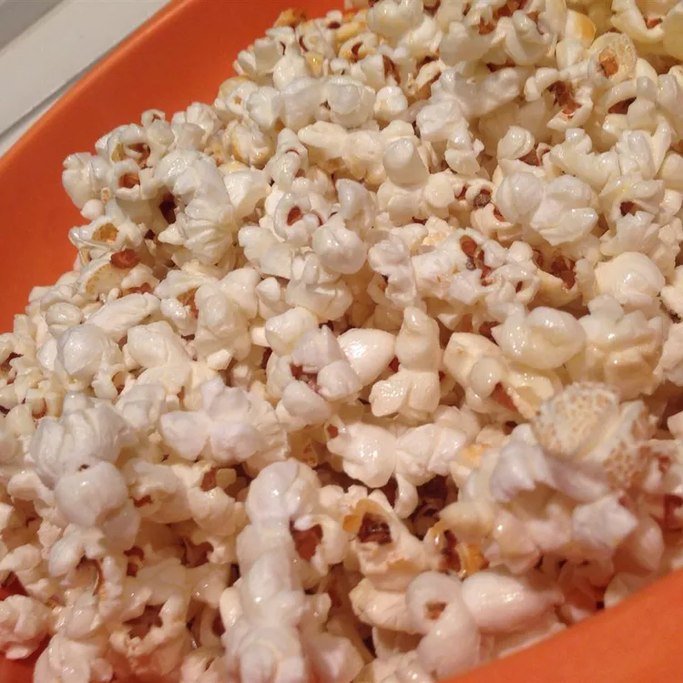

Kettle Corn

Kettle corn is a tasty and easy to make treat for almost any occasion.
The sugar helps to add an extra sweet taste to the kettle corn and if
desired you can sprinkle in salt for enhanced flavor before eating.
Ingredients
- ¼ cup vegetable oil
- ¼ cup sugar
- ½ cup un-popped popcorn kernels
Steps
- Heat oil in a large pot over medium heat, stir in popcorn kernels and sugar.
- Cover and shake the pot continuously to prevent the sugar from burning.
- When the popping has subsided to every 3 seconds remove pot from heat and shake until popping cesses, about a couple minutes.
- Pour popcorn into large bowl and let cool before eating.